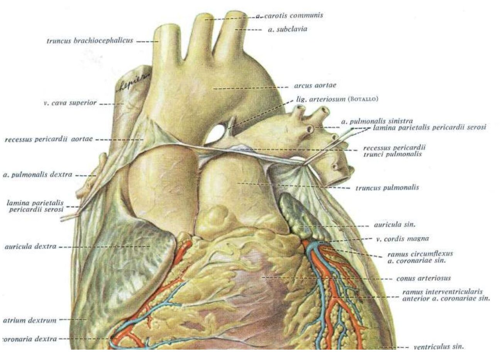
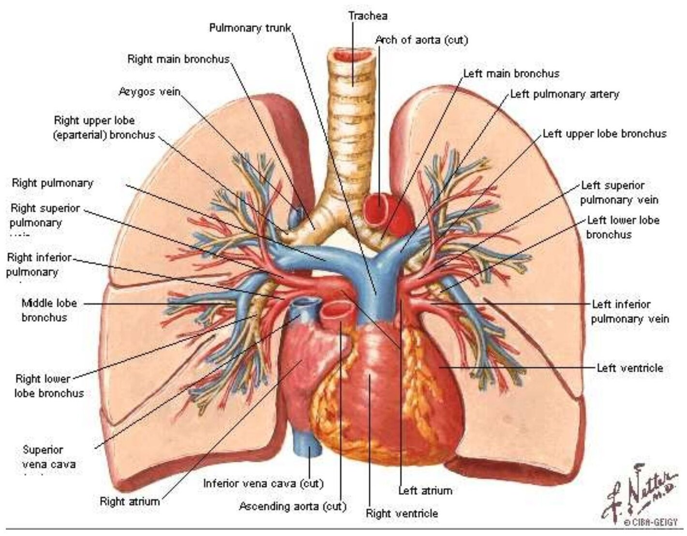
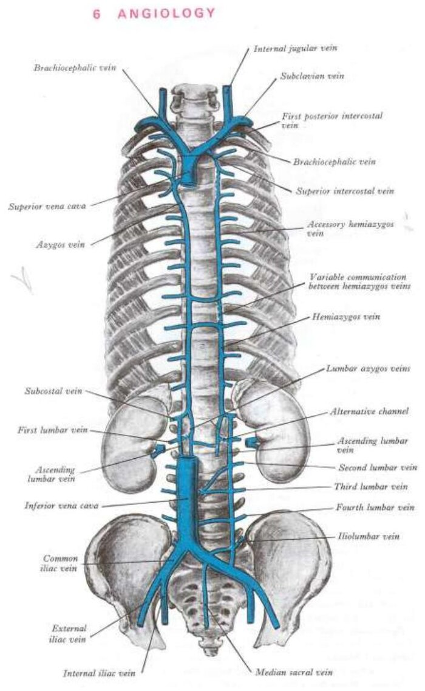

Bölüm 7 · Aorta, truncus pulmonalis et venae cavae
Kalpten çıkan iki büyük arter ve kalbe dönen büyük venler dolaşımın ana gövdeleridir. Bu bölüm aortanın üç kısmını ve dallarını, arcus aortae'den çıkan damarları, a. subclavia'yı, akciğer arter ve venlerini ve v. cava inferior'u anlatır. Baş ve boynu besleyen a. carotis communis Bölüm 8'de, v. cava superior ve onu oluşturan venler Bölüm 9'da anlatılır.
Aorta dolaşım sisteminin ana arteridir ve büyük bir elastik arterdir (Bölüm 1.2). Sol ventrikülden, sol 3. kaburga kıkırdağının alt kenarı hizasında ve sternumun sol arka tarafında başlar. Manubrium sterni'nin orta kısmına kadar yükselir, sonra sola ve arkaya doğru kavis yapar. Omurganın sol tarafında aşağı iner, 12. torakal vertebra düzeyinde diyaframın hiatus aorticus'undan geçerek karın boşluğuna girer ve 4. lomber vertebranın alt kenarı hizasında sağ ve sol aa. iliacae communes'e ayrılır (bifurcatio aortae). Aorta üç bölümde incelenir:
Arcus aortae'nin dalları soldan sağa değil, sağdan sola sırayla çıkar: (1) truncus brachiocephalicus, (2) a. carotis communis sinistra ve (3) a. subclavia sinistra (Şekil 7.1). Sağ ve sol tarafın bu asimetrisi gelişimden gelir: sağ dördüncü arkus arteri a. subclavia dextra'nın başlangıcına dönüşür ve sağda a. carotis communis ile ortak bir gövdeden (truncus brachiocephalicus) çıkar. Solda ise iki arter doğrudan kavisten ayrılır.
Arcus aortae'nin komşulukları ve klinik önemi. Kavsin sol yüzünü yukarıdan aşağı n. phrenicus sinister ve n. vagus sinister çaprazlar. N. vagus kavsin altında n. laryngeus recurrens sinister'i verir. Bu sinir lig. arteriosum'un lateralinde kavsin altından dolanır ve trakea ile özofagus arasındaki oluktan boyna çıkar (Bölüm 6.4). V. brachiocephalica sinistra üç dalın önünden çaprazlar. Kavsin içbükey alt yüzünde lig. arteriosum, a. pulmonalis sinistra ve sol ana bronş bulunur. Arcus aortae'nin anevrizması bu komşuluklara bası yapar: sol rekürren sinirin gerilmesiyle ses kısıklığı, trakeaya basıyla nefes darlığı ve her kalp atımında trakeanın aşağı çekilmesi gibi bulgular görülür. Kavsin a. subclavia sinistra ile lig. arteriosum arasında kalan bölümü fetüste dardır ve isthmus aortae adını alır. Aort koarktasyonu en sık burada görülür (Bölüm 6.5).
Varyasyonlar. Kişilerin yaklaşık %10-15'inde a. carotis communis sinistra truncus brachiocephalicus ile ortak bir gövdeden çıkar ve kavisten yalnızca iki dal ayrılır. Daha seyrek olarak (yaklaşık %0,5-1) a. subclavia dextra truncus brachiocephalicus'tan değil, kavsin son dalı olarak a. subclavia sinistra'nın da ötesinden çıkar ve sağ kola ulaşmak için özofagusun arkasından geçer (a. lusoria). Özofagusa yaptığı bası yutma güçlüğüne (dysphagia lusoria) yol açabilir.
Truncus brachiocephalicus (a. innominata) arcus aortae'nin ilk ve en kalın dalıdır. Sağ 2. kaburga kıkırdağının üst kenarı düzeyinde, kavsin başlangıç kısmından çıkar. Yukarı, arkaya ve sağa doğru uzanır ve sağ art. sternoclavicularis'in arkasında a. subclavia dextra ile a. carotis communis dextra'ya ayrılır. Genellikle dal vermez. Bazen trakeanın ön yüzünde yukarı çıkıp gl. thyroidea'nın alt kısmını besleyen ince bir dal verir: a. thyroidea ima. Sunuma göre bu arter %20 oranında görülür (çoğu kaynak yaklaşık %10 verir). Trakeostomi sırasında trakeanın önünde bu arterin bulunabileceği akılda tutulmalıdır.
A. subclavia sağda truncus brachiocephalicus'tan, solda doğrudan arcus aortae'den çıkar. Bu yüzden sol a. subclavia'nın göğüs içinde bir bölümü vardır ve sağdakinden uzundur. İki taraf da plevranın tepesinin (cupula pleurae) üzerinden kavis çizerek boyun köküne çıkar, klavikulanın yaklaşık 2 cm üstüne yükselir, birinci kaburganın üst yüzünde m. scalenus anterior'un arkasından geçer ve birinci kaburganın dış kenarında a. axillaris adını alır. M. scalenus anterior arteri üç bölüme ayırır: kasın medialindeki birinci bölüm, arkasındaki ikinci bölüm ve lateralindeki üçüncü bölüm. Dalları her iki tarafta aynıdır (Şekil 7.1):
Pars thoracica aortae T4'ün alt kenarında arcus'un devamı olarak başlar, mediastinum posterius'ta önce omurganın sol yanında, aşağıya doğru giderek omurganın önünde iner ve T12'de hiatus aorticus'tan geçer. Özofagus üst kısımda aortanın sağında, alt kısımda önündedir. Dalları iki gruptur:
Aorta thoracica ilk iki interkostal aralığa dal vermez. Bu aralıkların arka interkostal arterleri a. subclavia'dan, truncus costocervicalis'in a. intercostalis suprema'sından gelir (2023-2024 S20: aorta thoracica'nın beslemediği bölge "ilk iki costa" olarak soruldu). Nedeni gelişimdir: aorta T4 düzeyinde kavisten çıkar ve 1.-2. interkostal aralıklar bu noktanın yukarısında kalır. Aynı soruda verilen 12. kaburganın altı (a. subcostalis), akciğer (rr. bronchiales), diyafram (aa. phrenicae superiores) ve perikard (rr. pericardiaci) aorta thoracica'dan dal alır.
Pars abdominalis aortae T12'den L4'ün alt kenarına kadar uzanır. Dalları üç gruptur. Bu bölüm sunumda yalnızca adıyla geçer, ama dallarının iki kurul sorusunda sorulduğunu gösteren özeti şudur:
| Grup | Dal (çıktığı düzey) | Beslediği alan |
|---|---|---|
| Tek visseral dallar (ön) | Truncus coeliacus (T12-L1) | Mide, karaciğer, safra kesesi, dalak, pankreasın bir kısmı, duodenumun üst kısmı |
| A. mesenterica superior (L1) | İnce bağırsak, çekum ve apendiks, kolonun transversumun 2/3'üne kadarki kısmı | |
| A. mesenterica inferior (L3) | Kolonun son 1/3'ü, kolon descendens, sigmoid ve a. rectalis superior ile rektumun üst kısmı | |
| Çift visseral dallar (yan) | Aa. suprarenales mediae (L1) | Böbreküstü bezi |
| Aa. renales (L1-L2) | Böbrek; a. suprarenalis inferior ile böbreküstü bezi | |
| Aa. testiculares / ovaricae (L2) | Testis / over | |
| Parietal dallar | Aa. phrenicae inferiores (T12) | Diyaframın alt yüzü; aa. suprarenales superiores ile böbreküstü bezi |
| Aa. lumbales (L1-L4), a. sacralis mediana | Karın arka duvarı, omurga | |
| Uç dallar: aa. iliacae communes (L4) | Pelvis ve alt ekstremite |
Tablodan iki sınav sorusu çıkar. (1) Böbreküstü bezi üç kaynaktan beslenir: a. phrenica inferior (a. suprarenalis superior), doğrudan aorta abdominalis (a. suprarenalis media) ve a. renalis (a. suprarenalis inferior) (2023-2024 S10). Truncus coeliacus ve a. mesenterica superior bezi beslemez. (2) A. mesenterica inferior rektumun üst kısmını besler. Rektumun alt kısmı a. iliaca interna'nın dalı olan a. rectalis media ve a. pudenda interna'nın dalı olan a. rectalis inferior ile beslenir. Bu yüzden "a. mesenterica inferior rektumun alt kısmını besler" ifadesi yanlıştır (2024-2025).

Truncus pulmonalis sağ ventrikülün conus arteriosus'unun tabanındaki pulmoner delikten başlar. Arter olduğu hâlde venöz kan taşır ve sağ ventrikülün kanını akciğerlere götürür. Yaklaşık 5 cm'lik seyri boyunca önce aorta ascendens'in önünde, yukarı ve biraz öne doğru uzanır, sonra aortanın sol tarafına geçer. İki büyük arterin birbirinin etrafında bu biçimde sarmal dönmesi gelişimdeki aortikopulmoner septumun sarmal seyrinin sonucudur (Bölüm 6.5). Truncus pulmonalis arcus aortae'nin hemen altında, sunuma göre 5. ve 6. torakal vertebralar arasındaki disk hizasında sağ ve sol a. pulmonalis'e ayrılır. Bu çatallanma yerine bifurcatio trunci pulmonalis denir. Çatalın üst yüzü lig. arteriosum ile arcus aortae'ye bağlıdır.
A. pulmonalis'in dalları akciğer içinde bronşları izler ve uç dalları alveol duvarındaki kapillerlere ayrılır. Pulmoner emboli sunumun vurguladığı klinik durumdur: kalp hastalarında sağ ventrikülden gelen bir pıhtı ya da ameliyattan sonra derin venlerde oluşan trombüsler (Bölüm 1.5) VCİ ile sağ kalbe, oradan truncus pulmonalis'e taşınır. Büyük bir pıhtı truncus'un çatalına oturarak iki akciğerin dolaşımını birden kapatır, sağ ventrikül bu ani dirence karşı kan atamaz ve ani ölüme neden olabilir.
Vv. pulmonales akciğerlerden oksijenlenmiş kanı sol atriyuma getirir. Her akciğerden iki, toplam dört ven vardır (sağda orta lobun veni çoğunlukla üst vene katılır). Kapak içermezler ve sol atriyumun arka duvarına ayrı ayrı açılırlar (Bölüm 3.5). Kapaksız olmaları, sol atriyum basıncı yükseldiğinde bu basıncın doğrudan akciğer kapillerlerine iletilmesinin nedenidir (Bölüm 3.5).

V. cava inferior (VCİ) vücudun en büyük venidir. Diyaframın altındaki bütün bölgelerin kanını sağ atriyuma getirir. L5 vertebra hizasında, orta hattın biraz sağında, sağ ve sol v. iliaca communis'in birleşmesiyle oluşur. Aortanın sağında, omurganın önünde yükselir, karaciğerin arka yüzündeki olukta ilerler, diyaframın centrum tendineum'undaki foramen venae cavae'den (T8) geçer ve kısa bir göğüs içi seyirden sonra sağ atriyuma açılır. Ağzının önünde Eustachius kapağı vardır (Bölüm 3.2). Kendi yolunda aldığı dallar şunlardır: vv. lumbales (3. ve 4.), v. testicularis (ya da ovarica) dextra, iki v. renalis, v. suprarenalis dextra, vv. phrenicae inferiores ve vv. hepaticae.
Sol tarafın asimetrisi. VCİ orta hattın sağındadır. Sağ taraftaki venler ona doğrudan açılır, soldakiler ise önce sol v. renalis'e açılır: v. testicularis (ovarica) sinistra ve v. suprarenalis sinistra. Sol v. renalis sağdakinden uzundur ve VCİ'ye ulaşmak için aortanın önünden, a. mesenterica superior'un hemen altından geçer (Derleme S66: v. testicularis sağda VCİ'ye, solda sol v. renalis'e açılır; 2023-2024 S2: VCİ'ye açılmayan ven v. testicularis sinistra). Bu düzenin klinik bir sonucu vardır. Sol v. testicularis sağdakinden uzundur ve sol v. renalis'e dik açıyla açılır, bu da içindeki kan sütununun basıncını artırır. Sol v. renalis ayrıca aorta ile a. mesenterica superior arasında sıkışabilir. Bu nedenlerle testis venlerinin genişlemesi (varikosel) solda çok daha sık görülür.

Doğru: B. 1. ve 2. interkostal aralıklar a. subclavia'nın truncus costocervicalis'inden çıkan a. intercostalis suprema ile beslenir. Aorta thoracica T4'ten başladığı için bu aralıklara ulaşmaz. Aortadan çıkan aa. intercostales posteriores 3. aralıktan başlar.
A yanlış: 12. kaburganın altındaki bölgeyi aortadan çıkan a. subcostalis besler. C yanlış: akciğerin besleyici damarları rr. bronchiales aortadan çıkar. D yanlış: diyaframın üst yüzünü aa. phrenicae superiores besler. E yanlış: rr. pericardiaci perikardın arka kısmına gider.
Doğru: E. Parietal dallar gövde duvarına gider: aa. intercostales posteriores (3.-11. aralıklar), a. subcostalis ve aa. phrenicae superiores.
A, B, C ve D yanlış: dördü de göğüs içi organlara (bronşlar, özofagus, mediastinum lenf düğümleri ve bağ dokusu, perikard) giden visseral dallardır.
Doğru: E. Böbreküstü bezi üç kaynaktan beslenir: a. phrenica inferior'dan çıkan aa. suprarenales superiores, doğrudan aortadan çıkan a. suprarenalis media ve a. renalis'ten çıkan a. suprarenalis inferior.
A yanlış: truncus coeliacus ve a. mesenterica superior sindirim kanalının arterleridir, bezi beslemez. B, C ve D eksiktir: her biri üç kaynaktan yalnızca bir ya da ikisini sayar.
Doğru: D. Sol v. testicularis VCİ'ye değil sol v. renalis'e açılır. VCİ orta hattın sağında olduğu için sağdaki gonad veni ona doğrudan, soldaki ise sol böbrek veni aracılığıyla ulaşır. Derleme S66 aynı bilgiyi "sağda VCİ, solda v. renalis sinistra" biçiminde sordu.
A yanlış: alt lomber venler VCİ'ye açılır. B yanlış: sağ v. ovarica (ve testicularis) VCİ'ye doğrudan açılır. C yanlış: sol v. renalis aortanın önünden geçerek VCİ'ye açılır. E yanlış: vv. hepaticae VCİ'nin diyaframın hemen altındaki kısmına açılır.
Doğru (yanlış ifade): B. A. mesenterica inferior a. rectalis superior ile rektumun üst kısmını besler. Rektumun orta ve alt kısımları a. iliaca interna'dan çıkan a. rectalis media ve a. pudenda interna'dan çıkan a. rectalis inferior ile beslenir.
A doğrudur: truncus coeliacus'un üç dalı a. gastrica sinistra, a. splenica ve a. hepatica communis'tir. C doğrudur: rr. bronchiales aorta thoracica'dan çıkar. D doğrudur: a. renalis a. suprarenalis inferior'u verir. E doğrudur: a. ileocolica'nın dalları a. caecalis ve a. appendicularis'tir.
Doğru: A. A. thoracica interna 6. interkostal aralıkta uç dallarına ayrılır. Dallarından a. musculophrenica kaburga kavsi boyunca dışa ve aşağı giderek 7., 8. ve 9. aralıklara ön interkostal dallar verir ve diyaframın ön kısmını besler.
B yanlış: a. epigastrica superior diğer uç daldır, rektus kılıfına girer ve interkostal aralığa dal vermez. C yanlış: truncus costocervicalis a. intercostalis suprema ile 1. ve 2. aralıkları besler. D yanlış: a. thoracica interna'nın kendisi yalnızca üst altı aralığa dal verir. 7.-9. aralıklar onun dalı a. musculophrenica'nın alanıdır. E yanlış: a. vertebralis boyunda yükselir, interkostal dal vermez.